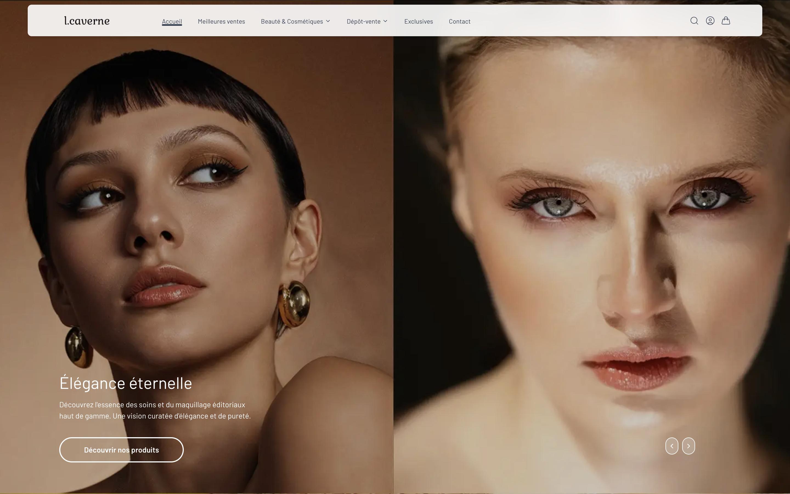
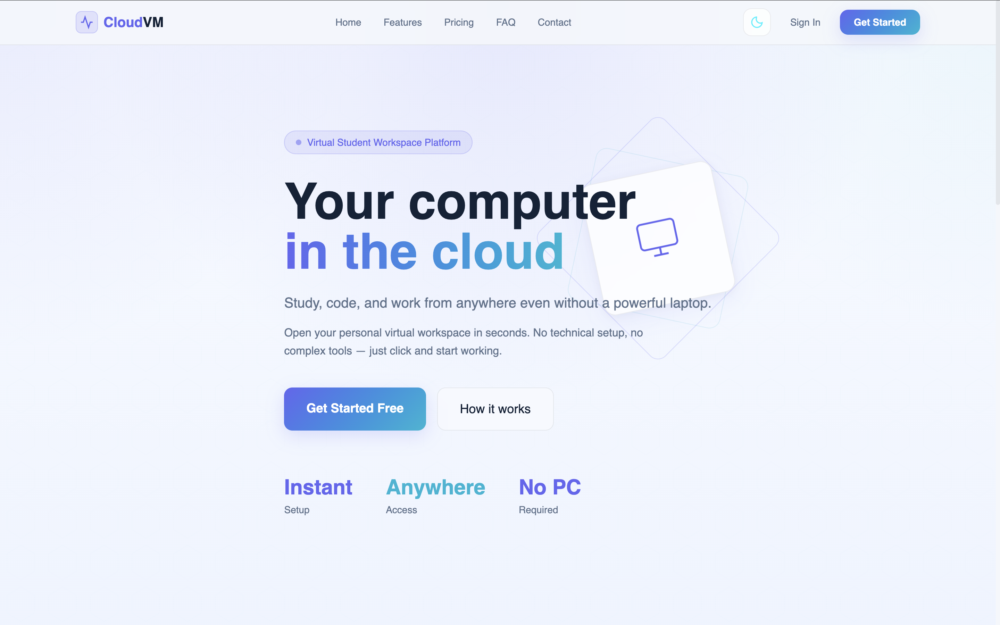
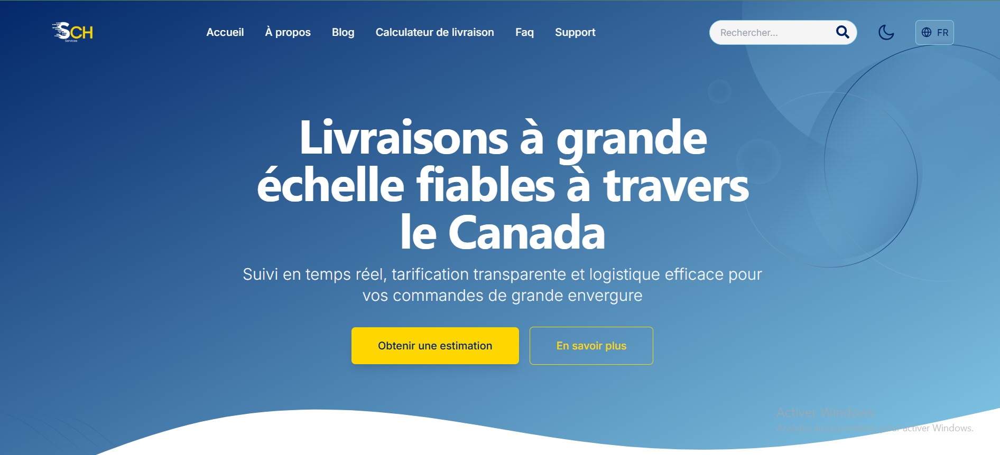
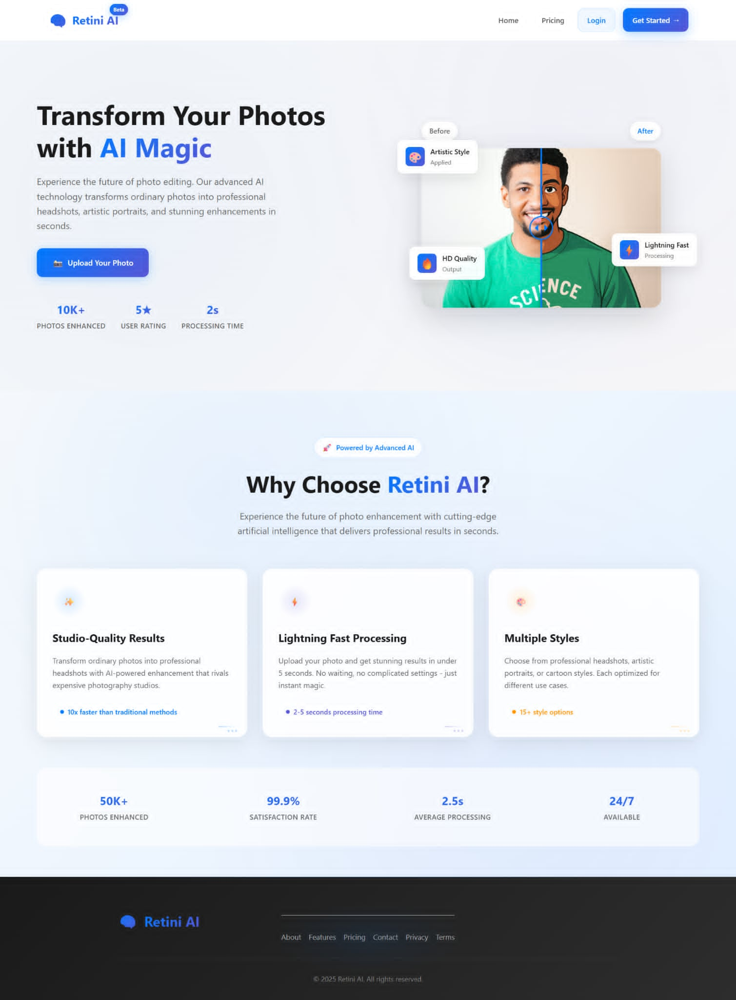
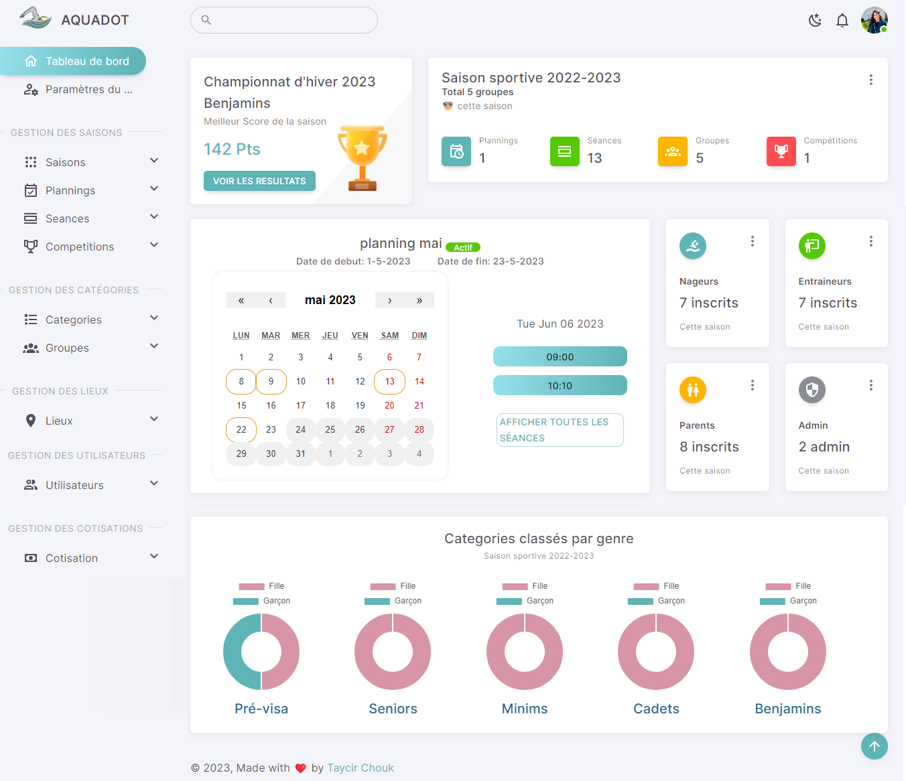
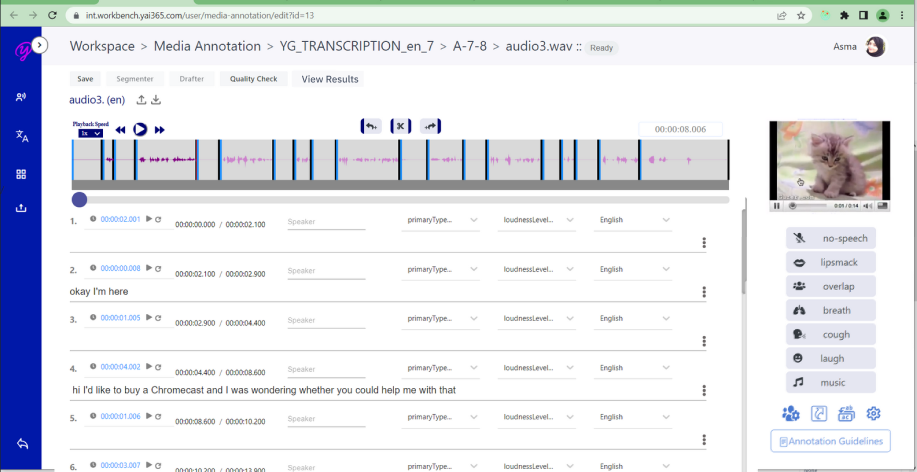
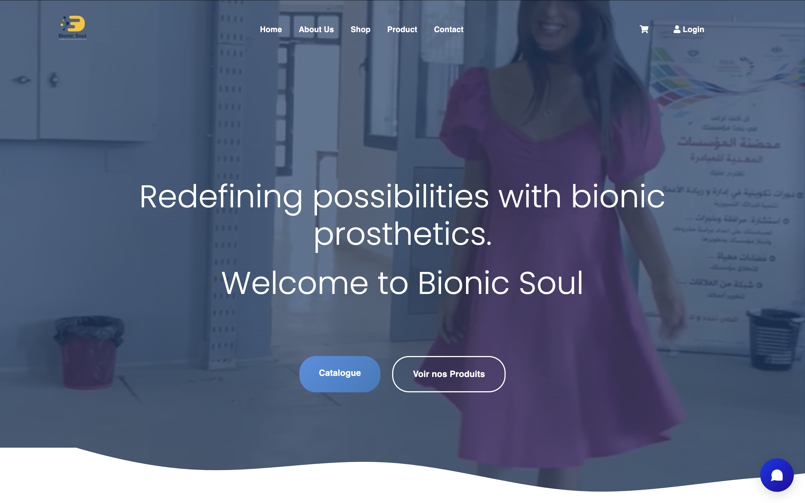
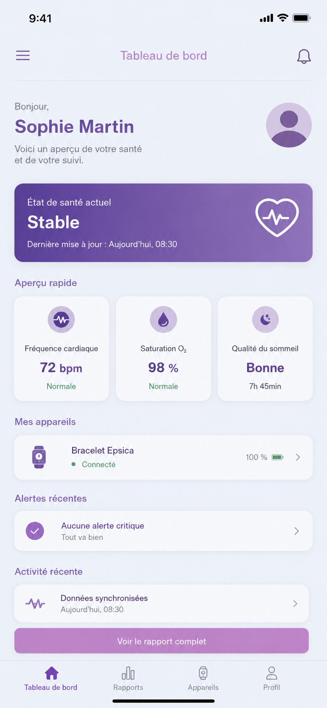

Taycir Chouk
I'm a Software Engineer
About
I bridge the gap between advanced Software Engineering and Cognitive Sciences. With a unique dual background as a Software Engineer and a Speech-Language Therapist, I specialize in building human-centered AI products, scalable cloud architectures, and cross-platform mobile systems. Certified PSPO I (Scrum.org) and a WEPs Signatory (UN Women), I engineer data-driven digital solutions designed for high impact, compliance, and inclusion.
Technical Product Owner & Full Stack Cloud Engineer
Architecting scalable backend infrastructures, data-driven platforms, and impact-oriented mobile systems.
- Location: Sousse, Tunisia | Open to international relocation
- Mobility: France / Europe (Passport Talent Eligible)
- Certifications: PSPO I (Scrum.org)
- Frameworks: Agile (Scrum, Kanban), Lean, EBM
- Degree: Master of Engineering (Software Engineering)
- Email: taycirch@gmail.com
- Corporate Engagement: WEPs Signatory
- Status: Available for International Opportunities
Throughout my dual-track journey, I have successfully engineered scalable multi-platform web and mobile software architectures while leading product strategies from MVP ideation to production deployment. As a startup founder (Startup Act Labeled), I have firsthand experience managing cross-functional technical teams (AI, Frontend, Backend), translating complex user data into high-performance features, and aligning stakeholders within highly demanding, fast-growth ecosystems.
Users & Families Tested
Startup Act Label
Innovation Awards
Years of Tech Expertise
Skills & Competencies
Engineered with a focus on Clean Architecture, Test-Driven Development (TDD), and scalable workflows.
Frontend & Mobile
Backend & Data
Cloud & DevOps
Product & Agile
Resume
A proven trajectory combining rigorous engineering, evidence-based product leadership, and clinical insights.
Summary
Taycir Chouk
Technical Product Owner and Software Engineer specialized in architecting scalable systems and leading AI-driven digital products. Certified PSPO I with a unique multidisciplinary background bridging advanced computing and cognitive sciences to deliver secure, compliant, and inclusive solutions.
- Sousse, Tunisia | Open to international relocation
- +216 94 355 154
- taycirch@gmail.com
Education
Master of Engineering in Software Engineering (Cloud \& DevOps)
2023 - 2026 (Expected)
École Pluridisciplinaire Internationale (EPI Sousse)
Advanced focus on cloud infrastructure orchestration, microservices architectures, data pipelines, and deployment automation.
Bachelor’s Degree in Computer Science (Information Systems)
2020 - 2023
Higher Institute of Technological Studies of Mahdia (ISET)
Solid foundation in software development, relational database systems optimization, and technical requirements analysis.
Bachelor’s Degree in Speech and Language Therapy
2017 - 2020
ESSTST (Health Science University of Tunis)
Graduated with high honors. Deep specialization in cognitive sciences, neuro-pedagogy, and clinical data management.
Professional Experience
Founder & Technical Product Owner
June 2025 - Present
ReaddlyTech - Tunis, Tunisia
- Product leadership: Engineered the vision and managed the full agile lifecycle (backlog, user stories) of an AI-powered Edtech platform.
- Data & Metrics: Conducted comprehensive user research and testing with 100+ families, achieving an early validation showed strong alignment with therapist observations.
- Technical oversight: Coordinated a cross-functional technical team (AI, Frontend, Backend) to build a secure microservices architecture.
- Recognition: Granted the official Tunisian Startup Act Label and awarded 2nd prize at the international Arab IoT & AI Challenge in Dubai.
Full Stack Developer (Remote)
Dec 2024 - May 2025
SCH-Services — Montreal, Canada
- Developed a real-time B2B logistics SaaS managing geo-fencing frameworks and custom cost-calculation models.
- Optimized database schemas and query execution, resulting in a 30% reduction in page load times.
- Automated CI/CD pipelines using GitHub Actions, decreasing overall deployment errors by 40%.
Full Stack Developer
Nov 2023 - Nov 2024
Yaiglobal - Tunis, Tunisia
- Engineered and secured robust RESTful APIs to handle high-traffic workflows for enterprise-level web applications.
- Integrated predictive data models using Python and collaborated with UI/UX designers to evaluate technical feasibility.
- Contributed to daily Scrum routines, sprint reviews, and architectural documentation.
Product showcase & engineering Portfolio
A curated selection of scalable platforms, high-performance mobile applications, and AI-driven products engineered to solve complex, real-world challenges.
- All solutions
- AI & Intelligent systems
- Mobile architectures
- B2B & enterprise SaaS


L-Caverne — E-Commerce & Back-Office CRM
A full-stack e-commerce architecture paired with a customized administrative CRM dashboard for real-time inventory management, logistics tracking, and secure checkout.
Scope: Features advanced SEO indexing, custom product configurations, and unified sales data streams.
{kind=link}

{kind=link}

Smart Factory — Industrial IoT & Vision
An intelligent monitoring engine deployed in textile manufacturing for automated defect detection on denim production lines using computer vision models.
KPI Tracking: Integrated operational monitoring dashboards calculating real-time Overall Equipment Effectiveness (OEE).

{kind=link}

{kind=link}

Aquadot — Sports Management SaaS
A multi-tenant management ecosystem for sports organizations featuring predictive data analytics modules for athletic tracking and automated club administration workflows.
Architecture: Engineered role-based dashboards (Admin, Coach, Athlete, Parent) with full REST API coverage.
{kind=link}

{kind=link}

{kind=link}

{kind=link}
{kind=link}
Expertise & Services
Delivering end-to-end technical leadership, architectural rigor, and data-driven product strategies to build high-impact digital solutions.
Technical Product Leadership
Translating complex business requirements and user data into prioritized, value-driven product backlogs. Certified PSPO I proficient in Agile frameworks, user story mapping, MVP scoping, and Evidence-Based Management (EBM) metrics to maximize cross-functional engineering ROI.
Full-Stack & Mobile Architectures
Architecting secure, responsive, and cross-platform mobile apps (React Native, Android SDK) and scalable web platforms. Specialized in robust backend microservices engineering (NestJS, FastAPI) with high-availability database modeling and automated CI/CD deployment pipelines.
AI & Cognitive System Integrations
Leveraging a strong background in Cognitive Sciences and Speech-Language Therapy to design advanced AI solutions. Expert in embedding Natural Language Processing (NLP), asynchronous text-to-speech pipelines, and predictive computer vision metrics (OEE monitoring) into complex business workflows.
Get in Touch
Available for international technical roles, product ownership opportunities, and mission-driven collaborations.
Location & mobility
Mahdia, Tunisia (Full Mobility to France / Europe)